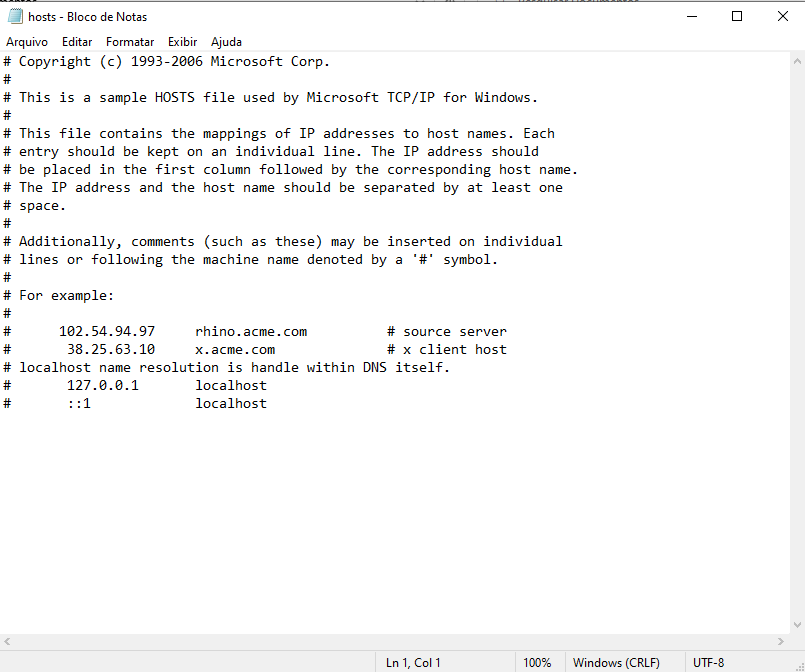
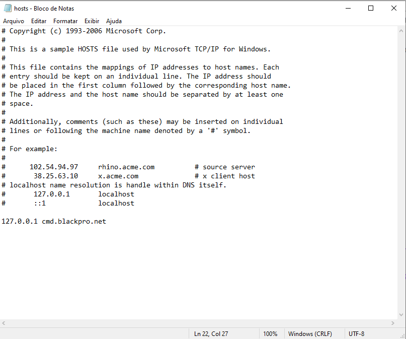
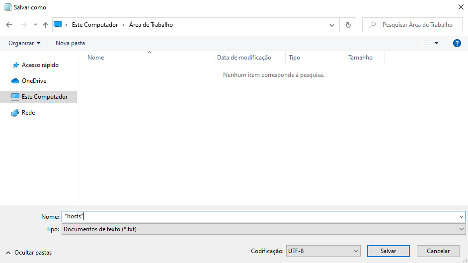

Baixe o BlackPro e volte a jogar agora mesmo, e o melhor de tudo... De graça!
Versão Atual do BlackPro: 1.0
Versão do Launcher compatível com o BlackPro: 3.1.0.0
Volte a jogar totalmente anônimo. Usando uma VPN juntamente do nosso client-proxy, você consegue jogar mesmo estando banido, e caso seja banido de novo. Basta criar outra conta e jogar!
Após baixar nosso client, no Windows vá até C:\Windows\System32\drivers\etc
Abra o arquivo hosts com o editor de textos de sua preferência.
Provavelmente estará igual a imagem abaixo:

Na última linha, caso em branco e caso exista, adicione o seguinte valor
127.0.0.1 cmd.blackpro.net
O resultado será igual a imagem abaixo:

Use o atalho CTRL + S e selecione a sua Área de Trabalho
Nomeie o arquivo para "hosts" e salve, igual a imagem abaixo:

Após salvo, copie o arquivo que foi criado na sua Área de Trabalho para C:\Windows\System32\drivers\etc e clique para substituir.
Após feito isso, utilize Windows + R e digite cmd
Quando o Prompt de Comando iniciar, use o comando ipconfig /flushdns e feche o cmd.
Agora você só precisa iniciar o arquivo BlackPro.exe antes do LFSProLauncher.exe
Após aparecer a mensagem no BlackPro dizendo que você já pode jogar, abra o LFSProLauncher e faça login em sua conta.
Pronto! Você burlou o sistema de punição do LFSPro.
Divirta-se!
NÃO atualize seu Launcher, baixe ele diretamente por esse site, não use o Launcher que vem direto do LFSPro. Quando o launcher pedir uma atualização, baixe aqui no BlackPro, pois caso contrário não irá funcionar.